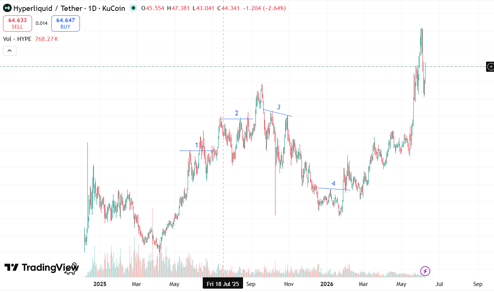

脚本筛选 / VCP
vcp_plot.py：把候选股变成可复核图表
这个模块服务于“先筛，再看图”的实战流程：vcp_screener.py
先压缩股票池，vcp_plot.py 再读取最新结果，拉取前复权日线，
生成带 K 线、均线、52 周高点和成交量的复盘页面。
Trading workspace
这里放正在使用的交易工具、真实持仓和每日判断。交易日志落在中证 1000 的对应日线点位上，再从市场位置回看个股强弱与情绪变化。
Practice
脚本筛选 / VCP
这个模块服务于“先筛，再看图”的实战流程：vcp_screener.py
先压缩股票池，vcp_plot.py 再读取最新结果，拉取前复权日线，
生成带 K 线、均线、52 周高点和成交量的复盘页面。
实盘 / 记录 02
把真实买卖拆成独立复盘页：已结束的交易固定盈亏，持仓中的交易进入详情页时自动拉取新浪行情， 用日线图继续观察建仓位置、持仓天数和浮动盈亏。
结构库 / Pattern Library
把可复用的行情结构单独收进库里，按 A 股与虚拟货币分区保存。 这里优先承载图片、标签和少量文字，避免混进实盘记录。
进入结构库日志 / 市场坐标 01
每日记录锚定在指数对应的日线收盘点上，保留当下的空间感， 以后也能沿行情路径复盘情绪与强弱判断。
阅读当天记录结构库 / A + B
结构库和实盘交易并列：实盘记录具体买卖，结构库沉淀可反复对照的图形样本。 当前先分为 A 股（A）与虚拟货币（B）两个板块。
A / A 股
暂无结构样本。
B / 虚拟货币

B / Crypto
交易日志 / CSI 1000
以中证 1000 日线收盘点作为每日记录的坐标。图上保留行情路径， 文字保留当天对个股相对强弱与交易情绪的直接感受。
Market Context
000852Daily Note 01
安洁科技跑输科瑞技术，当前情绪比较加速。
脚本筛选 / 完整说明
准确地说，筛选条件写在 vcp_screener.py 中；
vcp_plot.py 不重新全市场筛选，而是把命中的股票做成可交互的日线复盘页。
两个脚本连在一起，才构成当前使用的 VCP 观察流程。
01 / Workflow
vcp_screener.py 扫描沪深主板，按趋势、回撤、量能与振幅收缩条件判断，
将通过者保存为 vcp_result_YYYYMMDD.csv。
find_latest_csv() 在当前目录寻找最新的
vcp_result_*.csv。画图阶段只复核已命中候选，不重复扫描市场。
通过 AkShare 的新浪财经源获取行情，代码转换为 sh 或
sz 格式；默认 8 个线程并发，每只股票最多重试 4 次。
每只候选股输出 Plotly 日线图，最终生成
vcp_charts_YYYYMMDD_HHMM.html：
顶部为汇总表，下面逐只查看形态。
02 / Rules
以下条件来自当前使用中的 vcp_screener.py。
股票池
只保留代码以 60 或 00 开头的股票，
并剔除名称含 ST 或退市标记的样本。
周线趋势
最新周线满足 Close > MA10 > MA30，
且周 MA10、MA30 相比 4 周前均在上升。
回撤位置
收盘价高于日线 MA50；距 52 周高点回撤位于
(3%, 25%]；且高于 52 周低点的 1.3 倍。
量能收缩
要求 vol5 / vol20 < 0.8：
最近 5 日平均成交量低于最近 20 日均量的 80%。
波动收缩
日振幅按 (high - low) / pre_close 计算，
并要求 amp5 / amp20 < 0.8。
阶梯收缩
将最近 5 日拆成前 2 日与后 3 日，要求后 3 日平均振幅更低， 尝试捕捉整理尾端继续变紧的状态。
03 / Output
图表标题展示代码、名称、收盘价、回撤比例、vol5/vol20
与 amp5/amp20。主图包含 K 线、MA10、MA20、MA50 和
52 周高点虚线，副图显示红涨绿跌的成交量柱。
脚本会去掉非交易日空隙；单只股票拉取失败时将其记录并跳过， 不妨碍其余候选继续生成复盘图。
04 / Command
python vcp_screener.py
python vcp_plot.py第一行负责筛选与保存候选 CSV，第二行读取最新结果并输出交互图表。 规则负责收窄观察范围，最终的买卖判断仍需要结合图形、环境和交易计划。
Memory
BTC / Trader Profile 01
这个板块用于保存“交易员样本 + 行情背景”的复盘记忆。当前 BTC 图采用 TradingView 式静态走势草图，把资料文件里提到的关键盈利、亏损和风险暴露区间标在价格路径上。 标记不是逐笔成交，只是基于资产曲线与 BTC 日 K 对齐后的策略推断。
BTCUSDT / 1D Context
2022-08-13 至 2022-08-29，BTC 约 -17.0%，资产反而增加约 268.5 万 USDT。资料推断：可能具备做空能力，不是单边多头。
2024-11-06 至 2024-11-22，BTC 约 +30.9%，资产增加约 556.8 万 USDT。更像是在突破行情中押对方向并放大仓位。
2024-11-22 至 2024-12-08，BTC 仅约 +2.3%，资产增加约 617.1 万 USDT。资料将其归为高杠杆或仓位集中带来的高弹性。
2024-12-08 至 2024-12-24，BTC 约 -2.5%，资产减少约 1155.6 万 USDT，账户资产回撤接近 90%。这是整份资料里最重要的风险样本。
2025-05-17 至 2025-06-02，资产增加约 478.9 万 USDT；2025-07-04 至 2025-07-20，资产再增加约 1253.6 万 USDT，并触及约 2457.7 万 USDT 峰值。
2025-07-20 至 2025-08-05，BTC 约 -2.7%，资产减少约 311.5 万 USDT。资料提示：可能是趋势末端未及时降仓。
2025-12-27 至 2026-01-12，BTC 约 +3.9%，资产增加约 740.7 万 USDT；随后 2026-01-12 至 01-28 出现约 286.2 万 USDT 回撤。
2026-03-17 至 2026-04-02，BTC 约 -9.5%，资产增加约 344.1 万 USDT；2026-05-04 至 05-20，BTC 约 -2.9%，资产增加约 286.0 万 USDT。
Reading
交易阅读 / 第一本
这本先做成“记忆宫殿”：把位次、人性、趋势、安全线、独立系统、背驰与短差分别放入不同房间。 首页只放入口，完整摘录和心得进入阅读页。
进入阅读宫殿后续扩展
以后每本交易书都可以是一张书架卡片，点进去看独立页面： 首页负责分流，详情页负责承载原文摘录、心得、AI 引导语和复习路线。
Structure
首页
├─ 交易实战
│ ├─ 脚本筛选：vcp_plot.py
│ ├─ 实盘：长龄液压持仓中 / position-605389.html
│ ├─ 实盘：安洁科技已结束交易 / position.html
│ ├─ 结构库：A 股 / 虚拟货币
│ └─ 交易日志：中证 1000 点位记录
├─ 记忆库
│ └─ BTC：交易员关键点与价格路径
└─ 阅读
└─ 缠论：reading.html当前结构把“实战”“记忆库”和“阅读”分层。实战区按工具、持仓、结构库与每日日志展开； 记忆库保存可反复回看的行情样本和交易员画像；阅读区继续承载独立的长期输入。